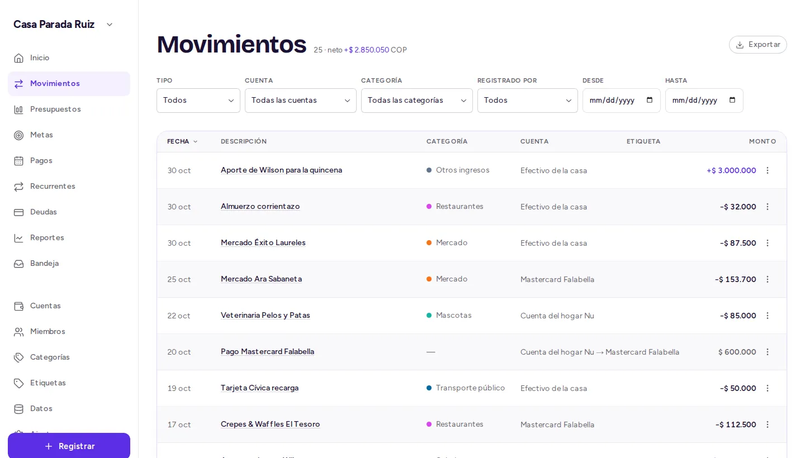
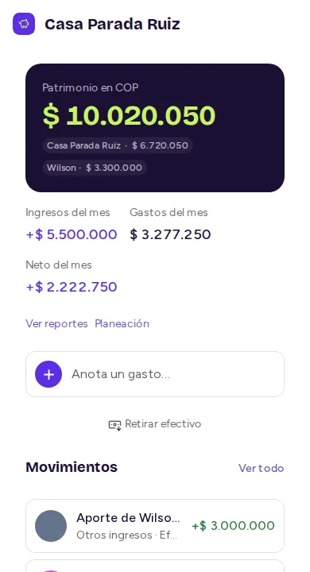
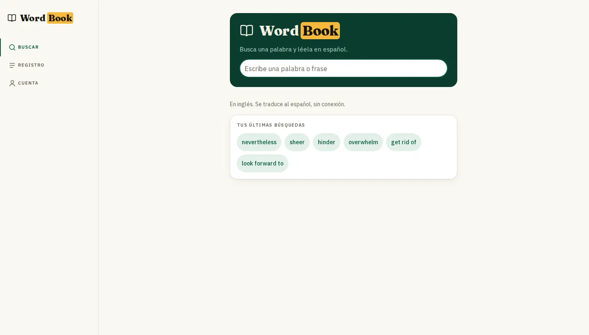
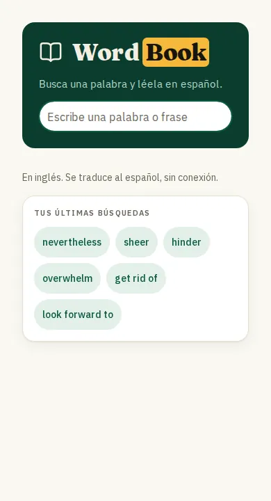
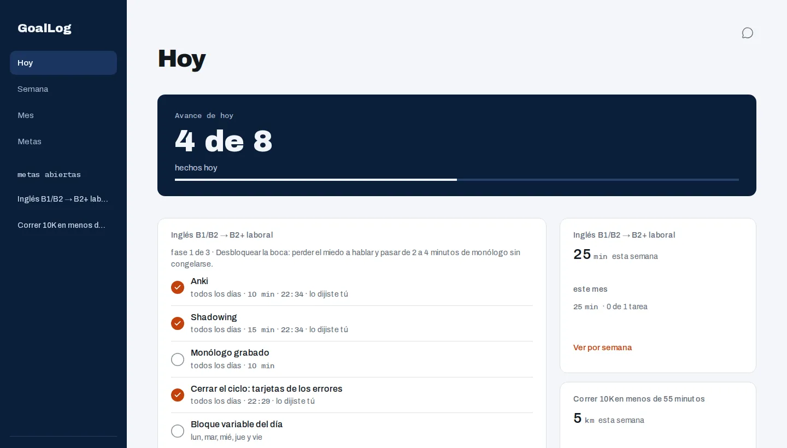
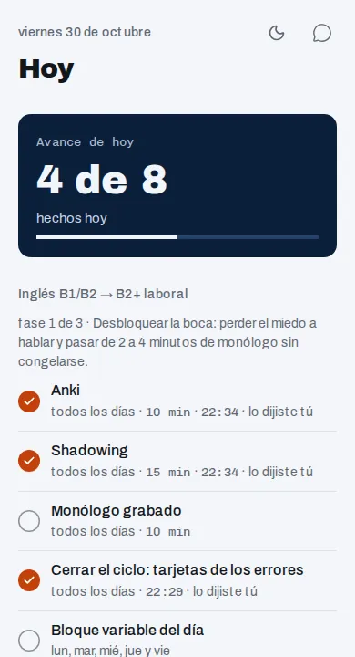
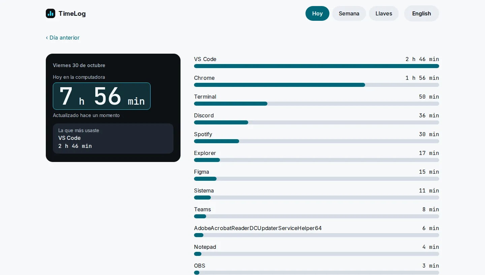
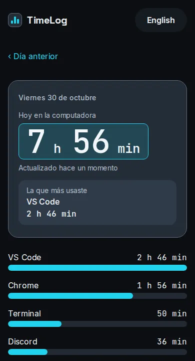

Cuatro apps que hice para mi día a día: la plata de la casa, las palabras, las metas y el tiempo.
La plata de la casa: quién puso qué y cuánto nos queda.


Busco una palabra mientras leo y sigo con el libro.


Mis metas del mes, partidas en lo que toca hacer hoy.


En qué se me fue el día frente al computador.

